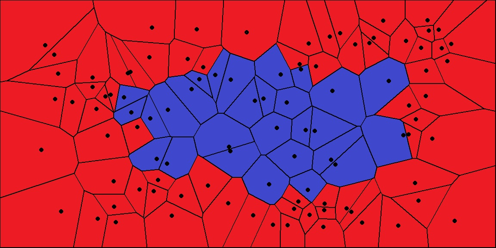

Simple ball example#
First, we need model data to test. In this example, we generate a 3D grid with a Distance attribute for each point. From this data, we will make a ball
creating a grid dataset#
1 import vivid3d
2 import numpy as np
3
4
5 #make the data
6 BOX_SIZE = 30
7
8 #make 3d grid
9 arr = np.arange(-BOX_SIZE, BOX_SIZE, 2)
10 ones = np.ones((len(arr), len(arr), len(arr)))
11 arrX = arr.reshape(-1, 1, 1) * ones
12 arrY = arr.reshape(1, -1, 1) * ones
13 arrZ = arr.reshape(1, 1, -1) * ones
14 #set points
15 points = np.array(list(zip(arrX.reshape(-1), arrY.reshape(-1), arrZ.reshape(-1))))
16 #set color field by Z value
17 color = arrZ.reshape(-1)
18 #Get distance from zero to each point (We will make our surface with this)
19 distance = np.linalg.norm(points - np.zeros((1, 3)), axis=1).reshape(-1)
Now, with this data we can call vivid and make a model.
The one liner#
The one liner#
1 vivid3d.make_model(
2 input_points=points, #the 3D points form which faces are made
3 surface_field = distance, #surface_field, Value for each input_point to later make a surface
4 surface_threshold = 20, #The threshold value for surface_field, resulting in the surface.
5 output_path = path + "/MyFirstModel", #optinal - output path for model
6 color_field = color, #optinal - Color value for each input point
7 color_field_min = -BOX_SIZE, #optinal - Min value for the color field, default is min(color_field)
8 color_field_max = BOX_SIZE, #optinal - Max value for the color field, default is max(color_field)
9 label = "My_First_Model", #optinal - label for the model, some formats support it
10 opacity = 0.8, #optinal - opacity factor for the model 0 is See throgh
11 file_type = "gltf2" #optinal - file format for the export, basic is "gltf2"
12 noise_displacement = 0.0001) #Optional, add noise to the model, improves Voronoi performance, recommend leaving as default
Here we used the distance from 0,0,0 as a field value and with a threshold of 20, we made a surface.
Similarly, you can input a Mask (bool array) and the surface will be created between true (blue in this 2D example) and false (red).
{kind=link}
More control#
For the second method, we will use a mask and utilize some other abilities of the code.
The advanced method#
1#we will make two masks for two meshes
2mask1 = np.array(distance) > 25
3mask2 = np.array(distance) > 15
4
5voronoi = vivid3d.VoronoiVolume(points, color) #make VoronoiVolume obj
6voronoi.create_surface(); #create the faces by running Voronoi, this might be a heavy function
7
8#make a mesh and take a surface by mask
9mesh1 = voronoi.to_mesh(mask1, "Mesh", 0.5)
10mesh2 = voronoi.to_mesh(mask2, "Mesh", 1)
11mesh1.smooth(10,0.7,0)
12
13#make a model with our two meshes
14model = vivid3d.Model([mesh1,mesh2])
15
16#lets add a grid to our model
17grid = vivid3d.create_grid(30,15,1)
18model.add_meshes(grid)
19
20#export
21model.export(path+"/MyModel", "gltf2")